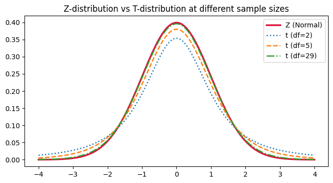

In [1]cell 3
import numpy as np import scipy.stats as st import matplotlib.pyplot as plt
In [2]cell 5
x = np.linspace(-4, 4, 500)
fig, ax = plt.subplots(figsize=(8, 4))
ax.plot(x, st.norm.pdf(x), color="crimson", linewidth=2.5, label="Z (Normal)")
for df_, style in [(2, ":"), (5, "--"), (29, "-.")]:
ax.plot(x, st.t.pdf(x, df_), linestyle=style, linewidth=1.8, label=f"t (df={df_})")
ax.set_title("Z-distribution vs T-distribution at different sample sizes")
ax.legend()
plt.show()
In [3]cell 7
x_bar = 148 # sample mean
mu = 150 # population mean (claimed)
n = 25 # sample size
sigma = 5 # population std -> used only for Z
S = 5 # sample std -> used only for T
z_test = (x_bar - mu) / (sigma / np.sqrt(n))
t_test = (x_bar - mu) / (S / np.sqrt(n))
print("z_test:", z_test)
print("t_test:", t_test)
print("df for t:", n - 1)Output
z_test: -2.0 t_test: -2.0 df for t: 24